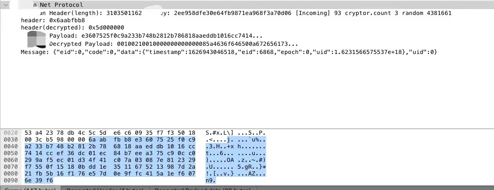

网络协议开发、调试的过程，因为bug的难以避免的存在，可能会变成痛苦的过程。编程出现bug是需要被容许的事情，毕竟大师高德纳的Tex的版本也到了3.141592653不是么~
前段时间项目需要变更Socket长连接库的底层实现，底层库替换后需要验证应用层数据传输。直观地检查应用协议层数据的传输过程，显然比业务层做黑盒测试更直接有效。
本文简要介绍Wireshark的插件编写，这可以帮助我们更好地进行网络协议开发调试、隔离错误。并且工具的作用在于，后续的边际成本几乎为0。
WireShark
WireShark是一款很著名并且很常用的网络协议分析软件，基于pcap来进行数据包捕获，其非GUI版本是TShark，GUI版本则是使用QT来编写图形界面。WireShark最早版本发布于1998年，2006更名Wireshark。跨平台、开源，支持各种常见网络协议，并且可以支持自定义协议的解析拓展。
通常来说，我们可以使用WireShark进行网络故障诊断，检查网络安全问题，验证网络应用程序，调试协议以及学习网络协议。相信大部分接触了WireShark的人都是这样的。
WireShark的基本使用比较简单，官方/非官方资料都有介绍，有需要可以官方文档找一找。
安装WireShark可以直接使用brew：brew install --cask wireshark。
环境配置
需要注意的是，WireShark支持的Lua版本不是最新的，我们需要搭配匹配的环境。
我这边使用Lua的版本是v5.2.4。如果你需要安装其他Lua的工具或者库，比如LuaRocks也需要注意版本兼容问题。
Lua可以直接用sublime进行编辑，可以配置下Build System，指定lua解析器的路径就可以。
Tools –> Build System –> New Build System…1
2
3
4
5{
"cmd": ["/usr/local/bin/lua", "$file"],
"file_regex": "^(...*?):([0-9]*):?([0-9]*)",
"selector": "source.lua"
}
xxx.sublime-build
编写插件
首先需要修改WireShark，注入插件代码1
dofile("/Users/hhh/Kernel/Dev/Wireshark.Lua/ht.lua")
以下是ht.lua自定义协议的插件代码，简单做一个示例：
注册自定义协议1
HT_proto = Proto("ht", "HT Network Protocol")
协议的基本包结构1
2
3
4local field_header = ProtoField.uint32("ht.header", "ht header", base.None)
local field_payload = ProtoField.bytes("ht.payload", "ht payload", base.None)
HT_proto.fields = {field_header, field_payload}
数据包解析1
2
3
4
5
6
7
8
9
10
11
12
13
14
15
16
17
18
19
20
21
22
23
24
25
26function HT_proto.dissector(tvb, pinfo, tree)
local tvb_len = tvb:len() -- bufffer length
pinfo.cols.protocol:set("HT")
pinfo.cols.info:set("HT Protocol")
local offset = 0
local headerLength = 4
--[[ dissection tree in packet details, 根节点及子节点 ]]
local root = tree:add(HT_proto, tvb:range(offset))
-- range第1个参数表示此时的偏移量，第2个参数表示字段占用数据的长度
root:add(field_header, tvb:range(offset, headerLength))
offset = offset + headerLength
local payloadLength = tvb_len - offset -- 待处理加解密及序列化
root:add(field_payload, tvb:range(offset, payloadLength))
end
注册监听1
2tcp_table = DissectorTable.get("tcp.port")
tcp_table:add(9081 ,HT_proto)
这是示例的效果图：

粘包处理
需要注意的是上面的示例，并未涉及粘包处理以及数据包的加解密。因为基于TCP的自定义协议各自封包格式不一样，基本都需要自行处理。
TCP的粘包一般两种情况：
1、单Segment（TCP包）包含多PDU（应用协议包）
2、单PDU跨多个Segment
处理方法要么循环解包，要么需要WireShark为我们重新拼接TCP的Payload了。
假如应用协议上我们解析到了数据包的大小，可以这样说明协议包的大小1
2
3
4
5
6
7
8
9
10
11
12
13
14
15
16offset = pinfo.desegment_offset or 0
while true
do
local nextFrame = offset + frameLength
if tvbuf:len() < nextFrame then
pinfo.desegment_len = nextFrame - tvbuf:len()
return
end
-- 处理报文...
if tvbuf:len() == nextFrame then
break
end
end
以上是一些基本流程。
加解密
WireShark的插件是比较简单的，一般比较麻烦的是数据包加解密部分。
尽管Lua社区也有挺多基础库的了，比如常见的加解密、序列化等。但棘手的一般是自定义协议，可能会使用自定的加解密库，或者使用公开算法可能进行算法强化修改。
Lua既支持使用Lua来编写加解密库，也支持嵌入C的动态库。C的效率当然更高，但Lua库的优势在于在脚本层可以数据共享。如果加解密的过程是非幂等的（比如包之间的加解密有次序或依赖），那么恭喜你，可能要继续用Lua折腾一下了。
Comments